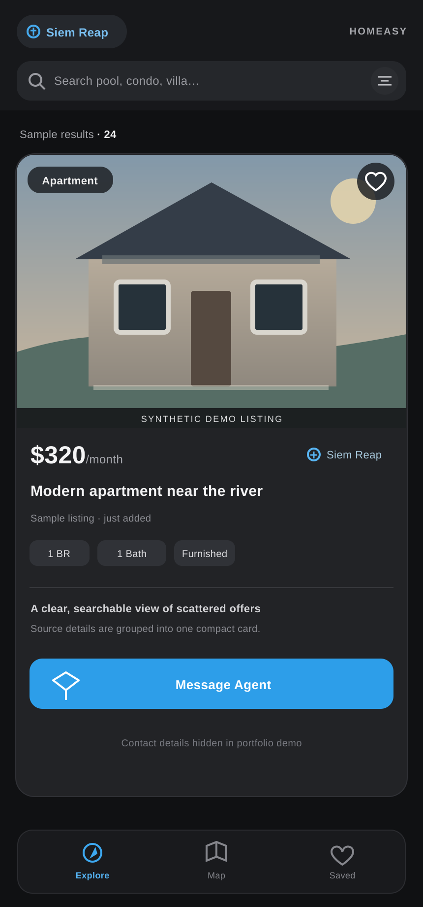

Сайты и приложения
От страниц услуг и форм заявок до веб-приложений с API, базой данных и удобным рабочим интерфейсом.
Сайт автосервиса ↗Я Илья Вешторт. Создаю для бизнеса сайты, внутренние сервисы и автоматизацию. Связываю формы, API, базы данных и Telegram, запускаю решения на Linux/VPS и сопровождаю их в работе.

01 / Чем могу помочь
Проектирую и разрабатываю решение, подключаю нужные сервисы, запускаю его в работу и при необходимости сопровождаю. Можно начать с отдельной интеграции или собрать продукт целиком.
От страниц услуг и форм заявок до веб-приложений с API, базой данных и удобным рабочим интерфейсом.
Сайт автосервиса ↗Внутренние инструменты для работы с заявками и заказами, календарём, расчётами и интеграциями, с гибкой настройкой ролей и прав доступа.
Посмотреть демо ↗Сценарии n8n, API-интеграции, Telegram-боты, обработка данных и уведомления, которые сокращают ручную работу.
Пример Homeasy ↗Настройка Linux/VPS, доменов и SSL, резервных копий, обновлений, мониторинга и диагностики проблем.
Мой опыт ↗Техническая база
По договорённости после запуска слежу за доступностью сервиса, сроком действия сертификатов и обновлениями, настраиваю мониторинг и уведомления для вас или вашей команды.
02 / Избранные работы
Рабочая система для автосервиса и собственный прототип сервиса поиска жилья с обработкой данных и интерфейсом в Telegram.
От заявки на сайте до работы с заказом
Заявка с сайта поступает в систему заказов, и команда получает уведомление в Telegram. Доступ сотрудников зависит от их роли — директора, менеджера или механика. Система помогает вести заказы, календарь и расчёты.
Рабочий прототип поиска аренды в Камбодже
В прототипе реализованы сбор публикаций, приведение данных к единому формату и поиск повторов. Сервис также включает бота и мини-приложение в Telegram. Проект показывает, как я объединяю источники данных, API и интерфейс в готовый продукт.
03 / Как устроены проекты
Выберите проект и компонент. Схема покажет, как компонент встроен в поток данных, а панель справа — его назначение, входные данные и результат работы.
04 / Лаборатория автоматизации
Выберите один из двух сценариев и проследите, как данные проходят каждый этап — от получения заявки до подготовки результата.
Все данные вымышлены. Запустите пример, чтобы увидеть последовательность действий в локальной симуляции.
{
"status": "idle",
"external_requests": false
}Сейчас: локальная симуляция в браузере. Она не вызывает API, не подключается к n8n и не отправляет реальные сообщения в Telegram.
Сценарий автоматизации для n8n: Скачать файл JSON ↗
Импортируйте файл в отдельное тестовое окружение и запустите вручную. Данные вымышлены, внешние запросы и отправка Telegram отключены. Запуск внутри n8n ещё не проверен.
03 / Профессиональный опыт
Почти четыре года администрировал сервисы и инфраструктуру для более чем 800 пользователей. Этот опыт помогает мне создавать решения, которые удобно запускать, диагностировать, развивать и поддерживать.
Администрировал системы и выполнял задачи системного инженера.
Языки Русский — родной · английский — B1 · немецкий — B1
Образование Информационная безопасность, МГТУ ГА
04 / От задачи до поддержки
Сначала уточняю цель и объём работ, затем проектирую, реализую, проверяю и запускаю решение. После запуска могу сопровождать его, развивать функциональность и решать возникающие технические задачи.
Цели бизнеса, задачи пользователей, объём работ и ограничения.
Этапы работы, данные, права доступа, интеграции и возможные сбои.
Разработка, проверка основных сценариев и исправление ошибок.
Настройка рабочей среды, передача результата, мониторинг, обновления и дальнейшее развитие.
05 / Связаться
Рассматриваю проекты по разработке веб-приложений, интеграциям API, автоматизации и запуску сервисов, а также подходящие предложения о постоянной работе. Работаю удалённо. Обсуждать задачи удобно письменно на русском или английском.
Опишите задачу и то, что уже работает. Я предложу следующий практический шаг и подходящий формат работы.